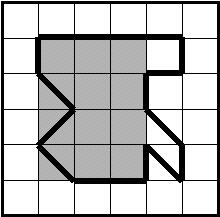

<html xmlns:v="urn:schemas-microsoft-com:vml" xmlns:o="urn:schemas-microsoft-com:office:office"
	xmlns:w="urn:schemas-microsoft-com:office:word" xmlns="http://www.w3.org/TR/REC-html40">
	<head>
		<title>MIUP'2004: Problem C</title>
		<meta http-equiv="Content-Type" content="text/html; charset=us-ascii">
		<meta name="ProgId" content="Word.Document">
		<meta name="Generator" content="Microsoft Word 9">
		<meta name="Originator" content="Microsoft Word 9">
		<link rel="File-List" href="./C_files/filelist.xml">
			<link rel="Edit-Time-Data" href="./C_files/editdata.mso">
				<link rel="OLE-Object-Data" href="./C_files/oledata.mso"> <!--[if !mso]>
<STYLE>
v\:* {behavior:url(#default#VML);}
o\:* {behavior:url(#default#VML);}
w\:* {behavior:url(#default#VML);}
.shape {behavior:url(#default#VML);}
</STYLE>
<![endif]-->  <!--[if gte mso 9]><xml>
 <o:DocumentProperties>
  <o:Author>Pedro Guerreiro</o:Author>
  <o:LastAuthor>Pedro Guerreiro</o:LastAuthor>
  <o:Revision>4</o:Revision>
  <o:TotalTime>56</o:TotalTime>
  <o:Created>2004-10-15T14:31:00Z</o:Created>
  <o:LastSaved>2004-10-15T14:35:00Z</o:LastSaved>
  <o:Pages>2</o:Pages>
  <o:Words>452</o:Words>
  <o:Characters>2581</o:Characters>
  <o:Lines>21</o:Lines>
  <o:Paragraphs>5</o:Paragraphs>
  <o:CharactersWithSpaces>3169</o:CharactersWithSpaces>
  <o:Version>9.2720</o:Version>
 </o:DocumentProperties>
</xml><![endif]-->
					<style> <!-- /* Style Definitions */ p.MsoNormal, li.MsoNormal, div.MsoNormal {mso-style-parent:""; margin:0mm; margin-bottom:.0001pt; mso-pagination:widow-orphan; font-size:12.0pt; font-family:"Times New Roman"; mso-fareast-font-family:"Times New Roman";}
	p {margin-right:0mm; mso-margin-top-alt:auto; mso-margin-bottom-alt:auto; margin-left:0mm; mso-pagination:widow-orphan; font-size:12.0pt; font-family:"Times New Roman"; mso-fareast-font-family:"Times New Roman";}
	pre {margin:0mm; margin-bottom:.0001pt; mso-pagination:widow-orphan; tab-stops:45.8pt 91.6pt 137.4pt 183.2pt 229.0pt 274.8pt 320.6pt 366.4pt 412.2pt 458.0pt 503.8pt 549.6pt 595.4pt 641.2pt 687.0pt 732.8pt; font-size:10.0pt; font-family:"Courier New"; mso-fareast-font-family:"Courier New";}
	@page Section1 {size:210.0mm 842.0pt; margin:70.9pt 30.0mm 70.9pt 30.0mm; mso-header-margin:35.45pt; mso-footer-margin:35.45pt; mso-paper-source:0;}
	div.Section1 {page:Section1;}
	--></style>
		<!--[if gte mso 9]><xml>
 <o:shapedefaults v:ext="edit" spidmax="1031"/>
</xml><![endif]-->  <!--[if gte mso 9]><xml>
 <o:shapelayout v:ext="edit">
  <o:idmap v:ext="edit" data="1"/>
 </o:shapelayout></xml><![endif]-->
	</head>
	<body bgcolor="white" lang="EN-GB" style='tab-interval:36.0pt'>
		<div class="Section1">
			<h1><span style='COLOR:#006000'>Problem C<o:p></o:p></h1>
			</SPAN>
			<h1 align="center" style='TEXT-ALIGN:center'><span style='COLOR:#006000'>Rectangle
by the Ocean<o:p></o:p></h1>
			</SPAN>
			<p><span style='COLOR:black'>Some countries are literarily known by their
shapes. For example, France is sometimes referred to as &#8216;the hexagon&#8217;, Italy is
called &#8216;the boot&#8217; and Portugal is known as &#8216;the rectangle by the ocean&#8217; (the
Atlantic Ocean, of course).<o:p></o:p></span></p>
			<p><span style='COLOR:black'>Given our mathematical background, we are curious
to know exactly which rectangle we are talking about when we say that Portugal
is a rectangle. More precisely, we want to compute the rectangle that best fits
the contour of the Portuguese map (not counting the islands). By definition,
that would be a rectangle with horizontal basis for which at least three of the
four corners lie on the contour of the map and whose area is closest to the
area of the map (either from above or from below).<o:p></o:p></span></p>
			<h2><span style='COLOR:#006000'>Problem<o:p></o:p></h2>
			</SPAN>
			<p>In general, we are given a closed line on a plane, which we shall call here a 
				&#8216;contour&#8217; (see below for a better characterization of our 
				contours), and we want to discover a rectangle with horizontal and vertical 
				sides having at least three of the four corners on given points of the contour 
				and such that its area is closest to the area inside the contour.</p>
			<p>For this task, each contour is described by a sequence of contiguous segments, 
				each segment connecting a point with integer coordinates to one of the eight 
				points with integer coordinates nearby, horizontally, vertically, or 
				diagonally. The contour is closed and does not touch itself. Here is an 
				example, whose area is 12.5:</p>
			<p align="center" style='TEXT-ALIGN:center'><!--[if gte vml 1]><v:shapetype id=_x0000_t75 coordsize = 
"21600,21600" o:preferrelative = "t" o:spt = "75" filled = "f" stroked = "f" 
path = " m@4@5 l@4@11@9@11@9@5 xe"><v:stroke joinstyle = 
"miter"></v:stroke><v:formulas><v:f eqn = 
"if lineDrawn pixelLineWidth 0 "></v:f><v:f eqn = "sum @0 1 0 "></v:f><v:f eqn = 
"sum 0 0 @1 "></v:f><v:f eqn = "prod @2 1 2 "></v:f><v:f eqn = 
"prod @3 21600 pixelWidth "></v:f><v:f eqn = 
"prod @3 21600 pixelHeight "></v:f><v:f eqn = "sum @0 0 1 "></v:f><v:f eqn = 
"prod @6 1 2 "></v:f><v:f eqn = "prod @7 21600 pixelWidth "></v:f><v:f eqn = 
"sum @8 21600 0 "></v:f><v:f eqn = "prod @7 21600 pixelHeight "></v:f><v:f eqn = 
"sum @10 21600 0 "></v:f></v:formulas><v:path o:extrusionok = "f" 
gradientshapeok = "t" o:connecttype = "rect"></v:path><o:lock v:ext="edit" 
aspectratio="t"></o:lock></v:shapetype><v:shape id=_x0000_i1025 
style="WIDTH: 165pt; HEIGHT: 162.75pt" o:ole="" type = "#_x0000_t75" coordsize = 
"21600,21600"><v:imagedata o:title="" src = 
"./C_files/image001.png"></v:imagedata></v:shape><![endif]--> 
				<![if !vml]><![endif]><!--[if gte mso 9]><xml>
 <o:OLEObject Type="Embed" ProgID="MSPhotoEd.3" ShapeID="_x0000_i1025"
  DrawAspect="Content" ObjectID="_1159359689">
 </o:OLEObject>
</xml><![endif]--></p>
			<p>This figure corresponds to the data presented in the Sample Input and Sample 
				Output sections below (assuming the lower left corner of the grid has 
				coordinates (0, 0)). The shaded area represents the solution.<o:p></o:p></p>
			<h2><span style='COLOR:#006000'>Input<o:p></o:p></h2>
			</SPAN>
			<P align="left">The first line of input contains <I>C</I> (<I>0 &lt; C &lt; 100</I>), 
				the number of test cases that follows.
			</P>
			<FONT color="#006000">
				<P>
			</FONT>The first line of each test case contains one integer, <i>N</i>, 
			representing the number of points that define the contour for that test case, 4 
			&lt;= <i>N</i> &lt;= 256.</P>
			<p>Each of the <i>N</i> following lines contains two integers, <i>X</i> and <i>Y</i>, 
				separated by a space, defining the x and y coordinates of a point along the 
				contour. Note that <i>X</i> and <i>Y</i> can be positive, negative or zero.</p>
			<p>Successive points <i>P</i><sub>i</sub> and <i>P</i><sub>i+1</sub> (with 1 &lt;= 
				<i>i</i> &lt; <i>N</i>) define a segment that belongs to the contour. The last segment is 
				defined by <i>P</i><sub>N</sub> and <i>P</i><sub>1</sub>, thus closing the 
				contour. The x coordinates of <i>P</i><sub>i</sub> and <i>P</i><sub>i+1</sub> and 
				also of <i>P</i><sub>N</sub> and <i>P</i><sub>1</sub> differ by at most 1 (in 
				absolute value) and so do the y coordinates. All points are distinct.<o:p></o:p></p>
			<h2><span style='COLOR:#006000'>Output<o:p></o:p></h2>
			</SPAN>
			<p>The output file has <EM>C</EM> lines, one for each test case.&nbsp;Each line has 
				five numbers, separated by a space. The first&nbsp;of these five 
				numbers&nbsp;represents the area of the contour and&nbsp;should be written with 
				exactly one decimal place; the remaining four numbers are integers representing 
				the coordinates of the lower left corner and of the upper right corner of the 
				computed rectangle.</p>
			<p>The computed rectangle has at least three of its four corners on the points 
				given to define the contour and its area is as close as possible to the area 
				within the contour.</p>
			<p>If more than one rectangle meets these requirements, your program should provide 
				the one whose sequence of coordinates is lexicographically the least.<o:p></o:p></p>
			<h2><span style='COLOR:#006000'>Sample Input<o:p></o:p></h2>
			</SPAN><pre>2</pre>
			<PRE>17</PRE>
			<pre>1 2</pre>
			<pre>2 3</pre>
			<pre>1 4</pre>
			<pre>1 5</pre>
			<pre>2 5</pre>
			<pre>3 5</pre>
			<pre>4 5</pre>
			<pre>5 5</pre>
			<pre>5 4</pre>
			<pre>4 4</pre>
			<pre>4 3</pre>
			<pre>5 2</pre>
			<pre>5 1</pre>
			<pre>4 2</pre>
			<pre>4 1</pre>
			<pre>3 1</pre>
			<pre>2 1</pre>
			<PRE><o:p>8</o:p></PRE>
			<PRE>
<o:p>0 0</o:p></PRE>
			<PRE>
<o:p>1 0</o:p></PRE>
			<PRE>
<o:p>2 0</o:p></PRE>
			<PRE>
<o:p>3 0</o:p></PRE>
			<PRE>
<o:p>4 0</o:p></PRE>
			<PRE>
<o:p>3 1</o:p></PRE>
			<PRE>
<o:p>2 2</o:p></PRE>
			<PRE>
<o:p>1 1 </o:p></PRE>
			<h2 style='tab-stops:45.8pt 91.6pt 137.4pt 183.2pt 229.0pt 274.8pt 320.6pt 366.4pt 412.2pt 458.0pt 503.8pt 549.6pt 595.4pt 641.2pt 687.0pt 732.8pt'><span style='COLOR:#006000'>Sample Output<o:p></o:p></h2>
			</SPAN><pre>12.5 1 1 4 5</pre>
			<PRE>4.0 0 0 2 2</PRE>
			<div class="MsoNormal" align="center" style='TEXT-ALIGN:center;tab-stops:45.8pt 91.6pt 137.4pt 183.2pt 229.0pt 274.8pt 320.6pt 366.4pt 412.2pt 458.0pt 503.8pt 549.6pt 595.4pt 641.2pt 687.0pt 732.8pt'><span style='COLOR:black'>
					<hr size="2" width="100%" align="center">
				</span></div>
			<p class="MsoNormal" align="center" style='TEXT-ALIGN:center;tab-stops:45.8pt 91.6pt 137.4pt 183.2pt 229.0pt 274.8pt 320.6pt 366.4pt 412.2pt 458.0pt 503.8pt 549.6pt 595.4pt 641.2pt 687.0pt 732.8pt'><span style='FONT-SIZE:13.5pt;COLOR:black'>MIUP'2004: Fourth Portuguese National
Programming Contest <o:p></o:p></span></p>
			<div class="MsoNormal" align="center" style='TEXT-ALIGN:center;tab-stops:45.8pt 91.6pt 137.4pt 183.2pt 229.0pt 274.8pt 320.6pt 366.4pt 412.2pt 458.0pt 503.8pt 549.6pt 595.4pt 641.2pt 687.0pt 732.8pt'><span style='COLOR:black'>
					<hr size="2" width="100%" align="center">
				</span></div>
		</div>
		Problem setter: Pedro Guerreiro
	</body>
</html>
